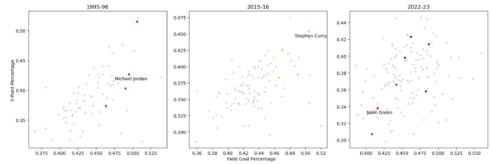
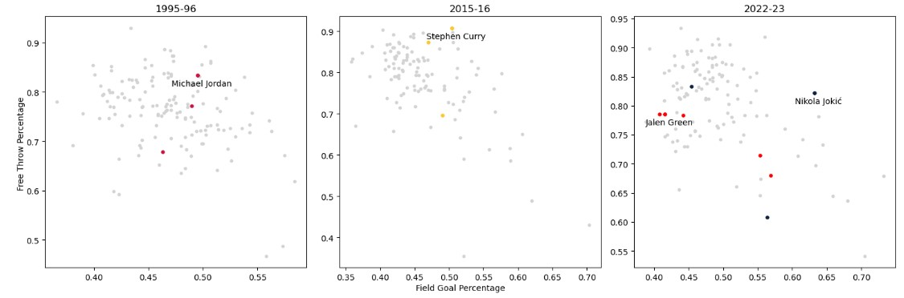
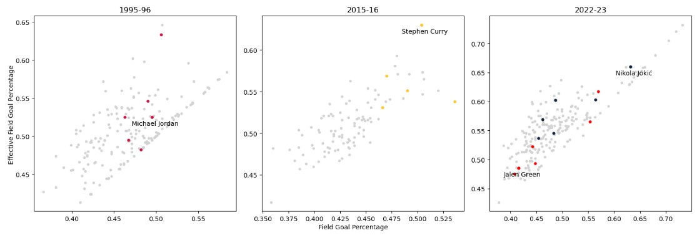

Three-Point Shooting vs. Field Goal Percentage
Strictly from an eye test, as an NBA enthusiast, one of the most noticeable changes in the NBA has been the increasing significance of the three-point shot.
In the 1995-96 and 2015-16 seasons, there appears to be a positive correlation between 3-point percentage (3P%) and field goal percentage (FG%).
Michael Jordan and Steph Curry, along with their teammates, were very efficient in respect to their opposition.
Steph Curry nearly sets himself apart entirely in terms of efficiency in both metrics.
In the 2022-23 season, we see a shift in the utilization of the 3-point shot, where we see significantly more variance in this relationship.
Nikola Jokic is not represented in this graph due to his low volume of 3-point shots; Jalen Green did not exemplify the same level of efficiency compared to his peers, but he holds plenty of potential for improvement.

Free Throws and Field Goals: An Evolving Dynamic
When analyzing the correlation between free throw percentage (FT%) and FG%, the data reveals interesting contrasts.
The 1995-96 season exhibited more variance, while the 2015-16 and 2022-23 seasons showed a negative correlation.
This suggests that as the league progressed, players who excelled in field goals were less likely to be strong free-throw shooters, with exceptions like Nikola Jokic, who managed to maintain high efficiency in both areas.
Jokic’s ability to excel in both FG% and FT% sets him apart, particularly as a center, a position traditionally known for struggling at the free-throw line.

Effective Field Goal Percentage: A Consistent Indicator of Success
The relationship between effective field goal percentage (eFG%) and FG% has remained consistently strong across the three seasons analyzed.
This is expected, given that eFG% is an advanced metric that builds upon FG% by accounting for the added value of three-pointers.
The players who perform well in this metric are often the same players who are efficient in traditional FG%, with Steph Curry again emerging as a standout in this area.
